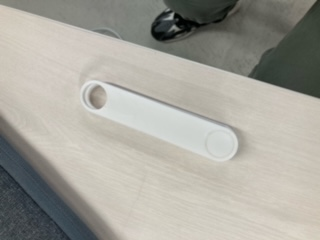

<h1><font size="5">作成器具情報　十徳草刈り器具　ケース作成</font></h1><br>
<br>

<br>
<h1><font size="3">十徳ナイフのように先端を取り換えできる草刈り器具製作第1弾ということでケースを作成してみた。
<br>
先端の丸穴に各種先端を合わせて留め具をつけて先端を自由に回転させて好きなものに交換できるようにしようと思っている。
</font></h1><br>